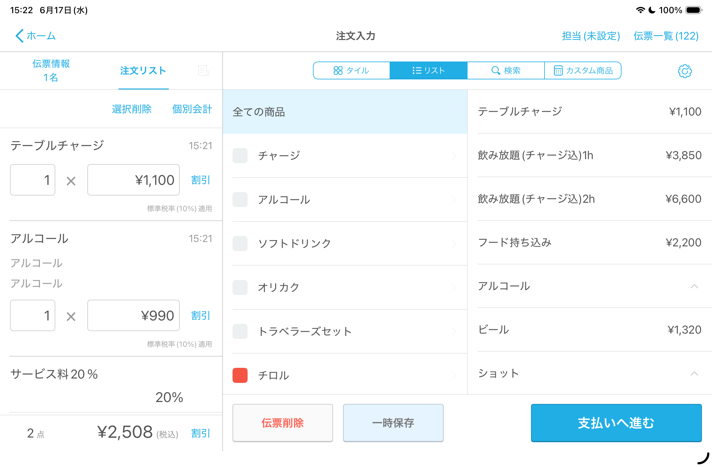
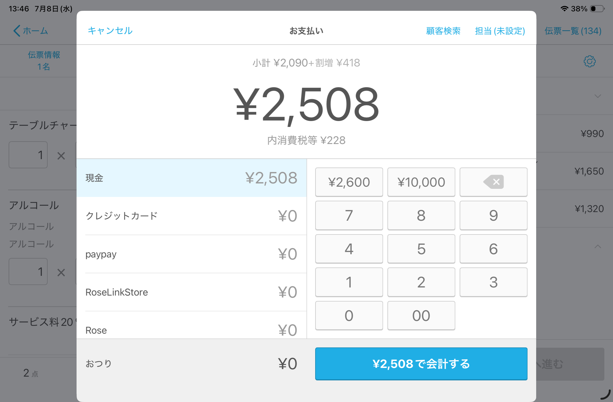
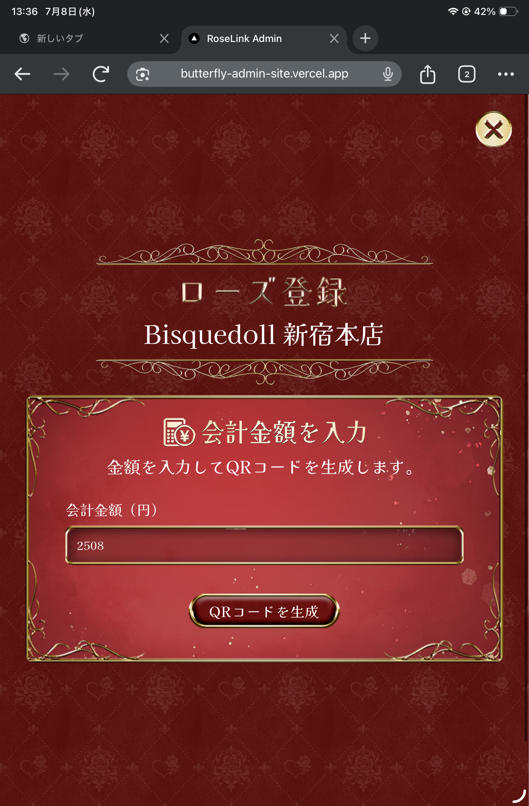
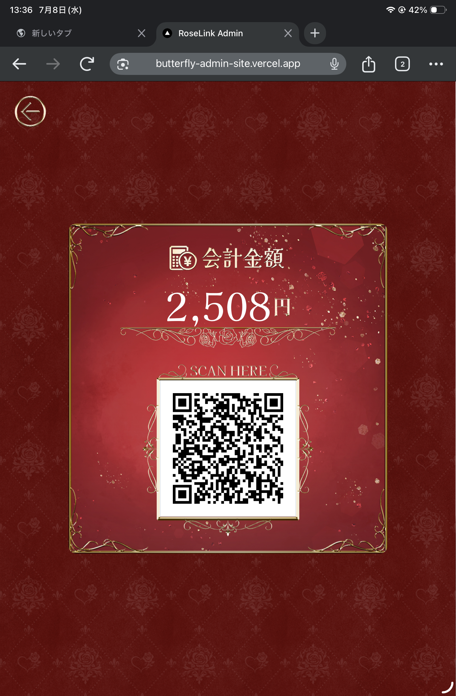
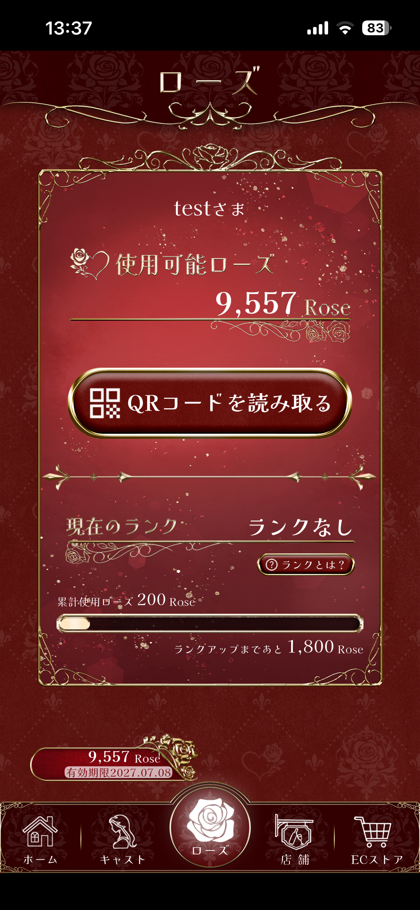
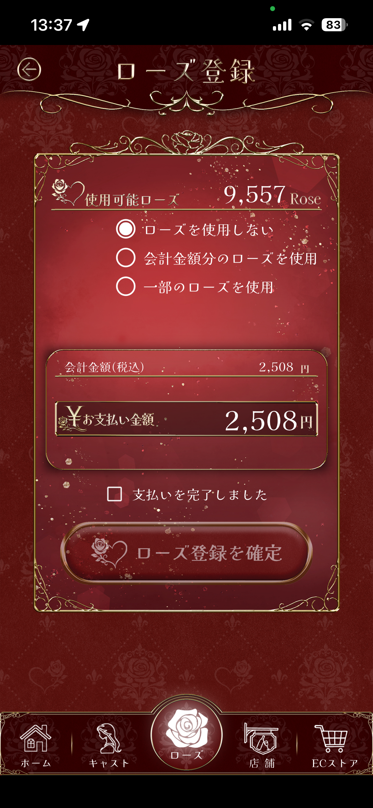
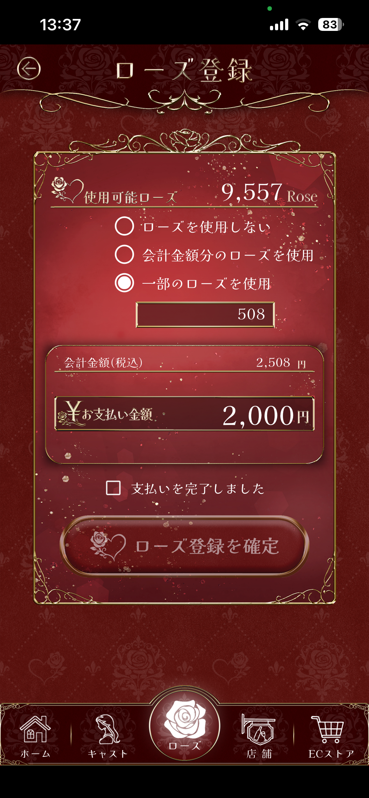
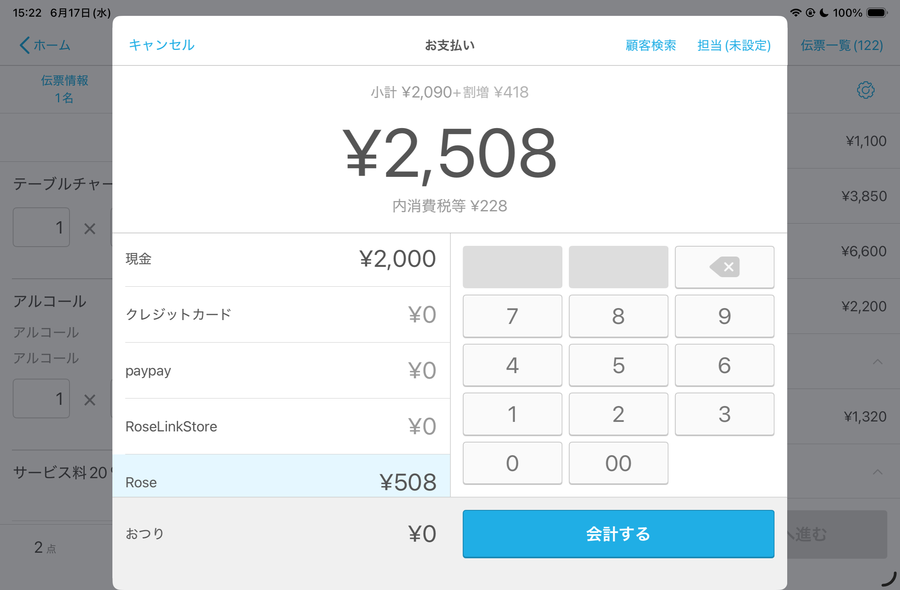
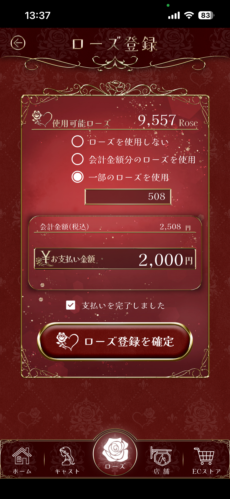
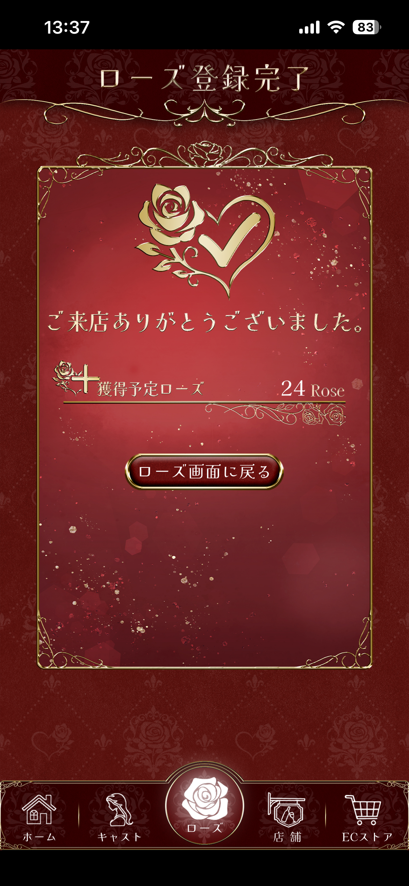

1
Airレジ
通常通り注文を入力する
- 注文入力画面で商品を追加します。
- 入力内容に抜けがないか確認します。
- 右側の「支払いへ進む」を押します。

Rose支払いのお会計は、Airレジ・RoseLink管理ページ・RoseLinkアプリの3つの画面を行き来します。今どの画面を操作しているかは、各手順の色バッジで確認できます。
ローズ登録の確定は取り消せないため、確定してもらう前にAirレジへの入力まで済ませて金額を照合し、現金やカードの受け渡しは確定のあとに行います。
この手順書では、操作する画面を色で区別しています。
7ステップ。色が変わるところで画面をきりかえます。
ローズ登録の確定は取り消せません。確定してもらうのは、Airレジとの金額照合(手順5)が終わってからです。
クレジット併用の場合も、Rose分を差し引いた残額をクレジットで会計して問題ありません。


必ずお会計の合計金額を入力します。


⚠️ 「ローズ登録を確定」はまだ押さないでもらいます。先にAirレジと金額を照合します(次の手順5)。
伝票のRose利用額欄に、ここで確認した金額を記入します。



⚠️ 「会計する」はまだ押しません。金額が合わない場合は、お客様が確定する前のこの時点で直します。

⚠️ ローズ登録の確定は取り消せません。金額に迷いがある場合は、確定前に責任者へ確認します。

